Introduction
Johnson’s algorithm is used to find the shortest paths between all pairs of vertices in a directed graph. We convert negative edge weights into non-negative edge weights. It does this by using the Bellman-Ford algorithm to remove all negative weights. It then allows Dijkstra’s algorithm to be used on the new graph reweighted graph. Dijkstra’s algorithm is applied to new graph by taking each node as the source vertex.
What is all-pairs shortest path problem ?
The all-pairs shortest path problem is used to determine the shortest graph distances between every pair of vertices in a given graph. It aims to figure out the shortest path from each vertex (v) to every other vertex (u) in the graph.
Why is this better ?
- Johnson’s algorithm can be used to find shortest distance between all pair of vertices even if the edge weights are negative.
- Johnson’s algorithm works better than Floyd-Warshall algorithm to find shortest path between all pairs of vertices in cases where the graph is a sparse graph.
Detailed explanation of Johnsohn's Algorithm
We will start with the example. Since this graph contains negative edges, Dijkstra’s algorithm cannot be applied to it yet. To apply Dijkstra’s algorithm the edge links must be transformed to contain non-negative numbers.
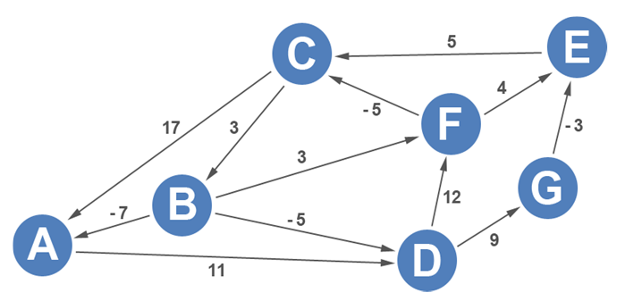Johnson’s algorithm starts off by selecting a source vertex. The problem with choosing an existing vertex is that it might not be able to reach all the vertices in the graph. To guarantee that a single source vertex can reach all vertices in the graph, a new vertex is introduced. The new vertex, S, is introduced to all vertices in the graph. Although the weight from the source to each vertex doesn’t matter as long as they’re all consistent, by convention a weight of 0 is applied to each edge from the source.
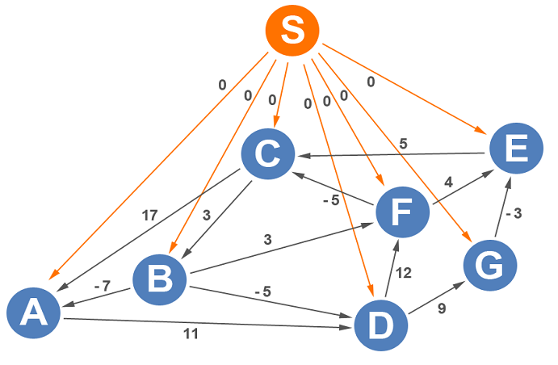Johnson’s algorithm computes the shortest paths from vertex S to all the vertices on the graph. Johnson’s algorithm utilizes a single source shortest path algorithm to get the new values. Since there are negative edge weights in the directed graph, Bellman-Ford is the algorithm that’s used to process this computation. To begin, all the outbound edges are recorded in a table in alphabetical order.
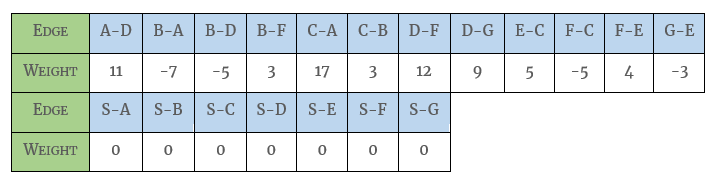The distance to each vertex is initialized to infinity except for the source vertex that’s initialized to 0.
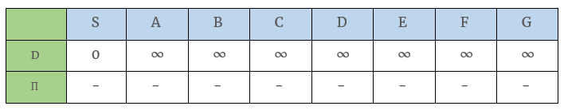The edges are relaxed in order. Edges A-D, B-A, B-D, B-F, C-A, C-B, D-F, D-G, E-C, F-C, F-E, and G-E have current distances of infinity. If you add any number to infinity, the number is still infinity. Edges that start with the source vertex, S, have a distance of 0 to S, so distances from S can be computed. During the first iteration, edges S-A, S-B, S-C, S-D, S-E, S-F, and S-G are the only edges that matter. Looking at the graph, the distance to all vertices from the source is 0. The predecessor to all vertices after the first iteration is S.

Starting the second iteration, all the edges are relaxed again. Since I have a detailed article on the Bellman-Ford algorithm, we’ll go through the Bellman-Ford portion of this algorithm quickly.
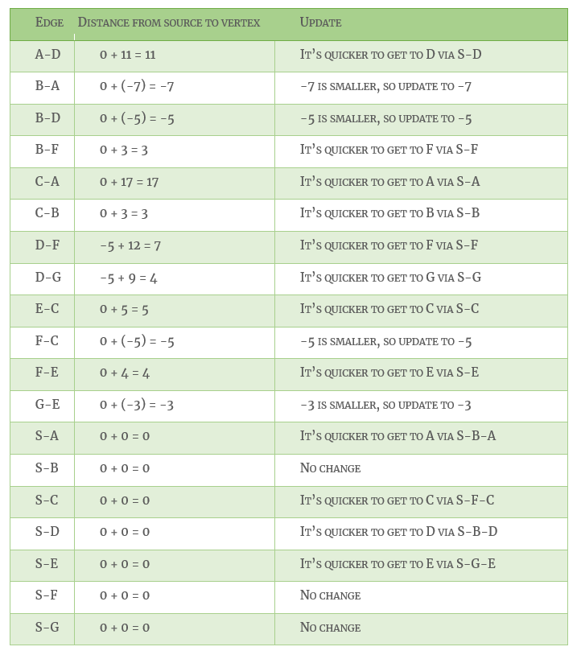The table below lists the shortest distances to each vertex after the second iteration.
You might have noticed that all distances that are computed from S directly will not change, so during the third and subsequent iterations, edges from S will not be included in the table.
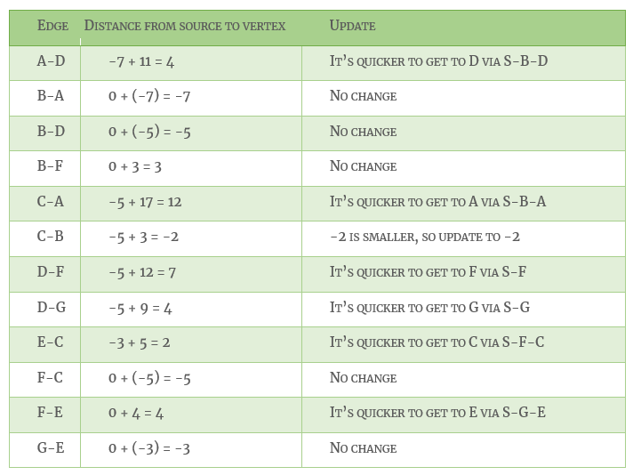The table below lists the shortest distances to each vertex after the third iteration.
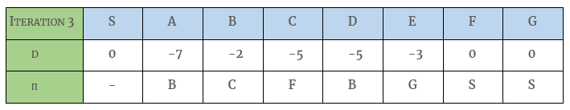Bellman-Ford starts on the fourth iteration.
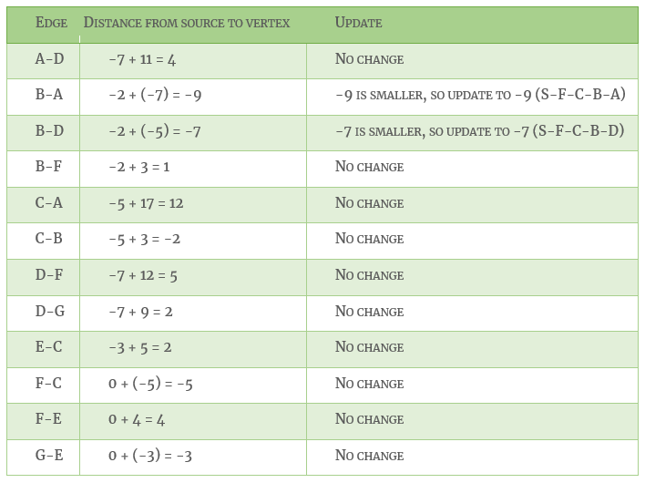The table below lists the shortest distances to each vertex after the fourth iteration.
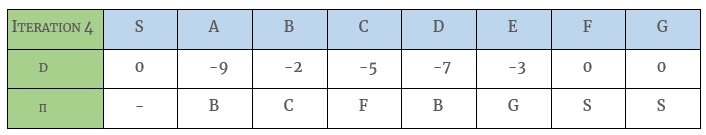Bellman-Ford starts on the fifth iteration.
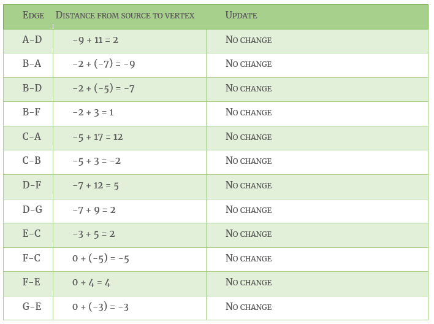The table below lists the shortest distances to each vertex after the fifth iteration.

After the fifth iteration, there are no changes, so we can end the Bellman-Ford portion of Johnson’s algorithm. The distance to each vertex from vertex S has been updated on the graph. Initially, the shortest distance from S-A was 0, but after running the Bellman-Ford algorithm, the shortest distance to A is -9 via S-F-C-B-A.
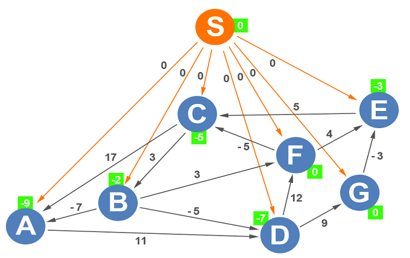The source vertex is unnecessary for the remainder of this example, so we’ll drop the S and its edges.
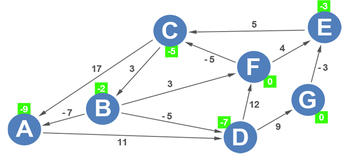Johnson’s algorithm then applies the following formula for the reweighting calculations:
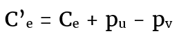In English, the new length (C’e) is equal to the original length (Ce) plus the weight of its tail (pu) minus the weight of its head (pv). Johnson’s algorithm does this for each of the edges.
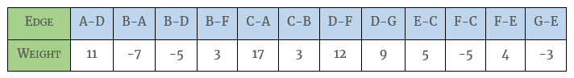
For A-D, Johnson’s algorithm starts with its original length of 11, adds the weight of the tail (A), which the algorithm determined was -9, and subtracts the weight of the head (D), which the algorithm determined was -7.
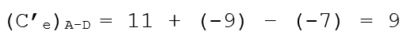The procedure is repeated for all the edges.
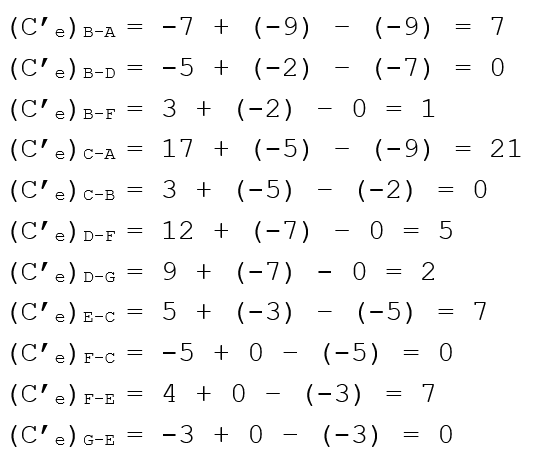The graph is updated with the new weights.
Now that all weights are non-negative, Dijkstra’s algorithm can be applied to each vertex to compute all shortest paths. See my article on Dijkstra’s Algorithm to see it in action.
Time Complexity
The main steps in the algorithm are Bellman Ford Algorithm called once and Dijkstra called V times. Where V is the number of vertices/nodes and E is the number of edges in the graph. Time complexity of Bellman Ford is O(VE) and time complexity of Dijkstra is O(VLogV). So overall time complexity is O(V2 log V + VE). The time complexity of Johnson's algorithm becomes same as Floyd Warshell when the graphs is complete (For a complete graph E = O(V2). But for sparse graphs, the algorithm performs much better than Floyd Warshell.
Drawbacks
- The algorithm fails to give us proper result in the presence of negative weight cycles.